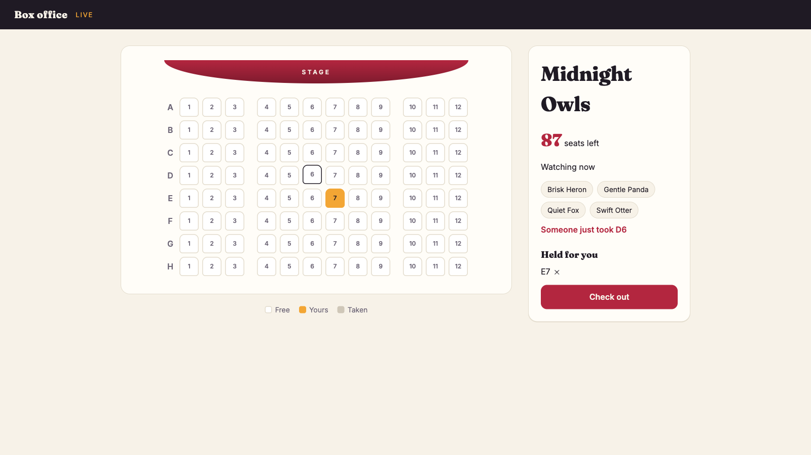

The server holds the state. The browser renders it. One small app, one concept at a time.
The Orion technique (orion-tour.pages.dev), on http4k
The problem
Live, multi-user UIs get built twice
In the browser
A state store. A cache. Optimistic updates. An API client. A socket protocol to hear about other people’s changes.
On the server
The database. An API shaped for the client. Push events, each carrying enough data for the client to patch its copy.
Two copies of the state, kept in sync by hand.
The problem
Server-rendered apps keep one copy, but nothing moves
Classic server rendering
One copy of the state, in the database. Render HTML and send it. Correct, and static: you see other people’s changes when you refresh.
What we want
Every screen updates when anything changes, for everyone looking at it, with no second model in the browser.
Keep the single copy. Add liveness.
The idea
The server holds the state. A change says what changed, not how.
Multiplayer by default
Your own change reaches you the same way as everyone else’s.
Nothing drifts
Every screen is re-read from the database.
Nodes are stateless
A shared database and a shared channel for “something changed”.
The example
A box office: fans grab seats for a show

Click a seat to reserve it; everyone watching sees it taken.
Two fans click the same seat; one of them gets it.
Reservations lapse after five minutes.
Check out, and a background job takes payment.
How it works
A page is drawn once, then kept live
First paint: a GET
Browseropens the show’s URL
Pagechecks who is viewing
Regionseach reads its state, in one transaction
Browsershows the whole page, as plain HTML
Then live: a stream, on the same URL
BrowserDatastar asks the same URL for a stream
Streamone connection; sends what changed since the paint
Regionslisten for the topics their reads touched
Quietnothing is sent until one is published
How it works
Then every change is this loop
Browsera click posts to the server
Routea POST, bound to one operation
Operationchanges the database, says which states changed
Busafter commit, a topic: the name of what changed
Browserthe new HTML is swapped in
Streamthe page’s open connection
Regiona live part of a page: re-reads, re-renders
Subscribedevery region showing that state
The loop asks two things of your code, in amber: an operation names what changed, and a region reads through states, so it knows what to listen for. The library does the rest.
How it works
The pieces, from the centre out
Domain
Values: every id and name is a type
Rows, tables: typed storage
Domain class: your logic, no framework
Feature
State: a named read
Rule: who may, and what they get
Operation: a change, naming what changed
Presence: who is here
Web
Region: a live part of a page, showing a state
Page: its regions, and who is viewing
Route: binds an operation or a rule
App
Workspace: one tenant per request
Bus: “this changed”, between nodes and out to every open page
Each ring depends only on the rings inside it: the domain knows nothing of features, and a feature knows nothing of the web.
The domain
Start at the centre
No framework: the values, the rows, the logic. None of it knows about the web.
Values
Values: every id and name is a type
class ShowId private constructor(value: UUID) : UUIDValue(value) {
companion object : UUIDValueFactory<ShowId>(::ShowId)
}
class SeatRef private constructor(value: String) : StringValue(value) {
companion object : StringValueFactory<SeatRef>(::SeatRef, { … }) // "F12"
}
data class ShowSeat(val show: ShowId, val seat: SeatRef)
A value type validates its own shape: “12F” cannot become a SeatRef, so nothing downstream handles raw text.
Storage
Rows and tables: typed access to the database
data class Booking(override val id: ShowSeat, val fan: ViewerId, val expiresAt: Instant,
val order: OrderId? = null) : Identified<ShowSeat>
class BoxOfficeTables(tables: Tables) {
val shows = tables<ShowId, Show>(SHOWS)
val bookings = tables<ShowSeat, Booking>(BOOKINGS)
}
Rows are data classes. Tables are typed handles to them.
The domain reads and writes storage only through these.
The domain class
The domain class: your logic over your rows
class BoxOffice(private val tables: BoxOfficeTables, private val clock: Clock) {
fun booking(pick: ShowSeat) = tables.bookings.get(pick)?.takeIf { it.liveAt(clock.instant()) }
fun reserve(pick: ShowSeat, fan: ViewerId) { … }
fun release(booking: Booking) = tables.bookings.delete(booking.id)
}
Built for each transaction, from that transaction’s tables.
No HTTP, no permissions, no publishing. It works on rows.
Anything else it needs, such as a clock or another service, is passed in, so a test controls it.
The feature
One ring out: the feature
What people can see and do with that domain. No web yet, and testable without one.
Feature
Feature: what people can see and do
sealed interface Actor {
data class Fan(val id: ViewerId) : Actor
data object System : Actor
}
class BoxOfficeFeature(clock: Clock) :
Feature<BoxOffice, Actor>({ tables -> BoxOffice(BoxOfficeTables(tables), clock) }) {
… // see: states, presence may: rules do: operations
}
Declares who acts: a fan, or the system.
No web. It can be driven from a test.
An app can have several, which build on each other: orders reads the box office, never the reverse.
State
State: a named read. Its name is its topic.
val shows by state { boxOffice -> boxOffice.shows() } // "shows"
val bookings by state { boxOffice, id: ShowId -> boxOffice.bookings(id) } // "bookings:<id>"
A state reads the domain. It is what a part of a page shows.
Most states are about one thing, so they take a key: the bookings for one show.
bookings.topic(id) is the topic "bookings:<id>": the name used to announce that this state changed, and to listen for that.
Derived states
Derived state: built from other states
val seatMap by derived { ctx, id: ShowId ->
val live = ctx.domain.live(ctx.read(bookings, id))
live.filter { it.order == null }.forEach { ctx.staleAt(it.expiresAt) } // read again as each hold lapses
val show = ctx.domain.show(id)
if (show == null) null else SeatMap(show, …)
}
ctx.read(bookings, id) reads another state, and takes on its topic: when the bookings change, so does the seat map.
ctx.staleAt says when it goes stale by the clock, so a lapsed reservation frees its seat with nobody publishing.
All the reads happen in one transaction, so the model is a consistent snapshot.
Presence
Presence: who is here, while their page is open
val watching by presence(ShowId, ViewerId) // who is watching each show
ctx.read(watching, show) // each viewer, and the value they carry, if any
A kind of state: read it like any other, and its topic says when it changed.
Not an operation: nothing to validate and no transaction. A lease, held while the page is open.
Joining and leaving publish like any change.
Rule
Rule: who may act
val fan by rule { ctx, actor -> if (actor is Actor.Fan) Allowed(actor) else Denied }
ALLOWED
Here is what you came for, handed down.
REJECTED
It has gone. A race, so the viewer is told why.
DENIED
I see you, and no. A 403.
HIDDEN
As far as you know, it doesn’t exist. A 404.
It is given ctx, to read the domain and other states, and the actor asking. It is named for what it hands down: here, a fan.
A rule is a state, so operations, pages and routes all ask the same question.
Rule
Rules build on rules
val yourBooking by rule { ctx, actor, pick: ShowSeat ->
ctx.read(fan, ActorKey(actor, Unit)).flatMap { fan ->
val booking = ctx.domain.booking(pick)
when {
booking == null -> Rejected(seatField, "You have no reservation of ${pick.seat}")
booking.fan != fan.id -> Denied
else -> Allowed(booking)
}
}
}
It starts from fan. flatMap carries on only from Allowed, so anyone who isn’t a fan stops there.
An unknown reservation is Rejected, with a reason. Someone else’s seat is Denied.
Operation
Operation: one block, in a transaction
val release by operation(yourBooking) { boxOffice, actor, pick: ShowSeat, booking ->
if (booking.order != null) return@operation Rejected(seatField, "${pick.seat} is already paid for")
boxOffice.release(booking)
Changes.of(bookings.topic(pick.show))
}
If yourBooking refuses, the block never runs. It gets the actor, the input, and what the rule found: the booking.
It runs in one transaction with the rule, and may run twice, so it makes no outside calls.
It ends in one of four ways: Changes, Rejected, Denied or Hidden.
Changes
Changes: what changed, not how
Changes.of(bookings.topic(show)) // "the bookings for this show changed" — re-read them
Changes.none()
A topic carries no data. Whoever receives it re-reads the state from the database.
Published after commit. A refusal rolls back and publishes nothing.
Duplicates and reordering do no harm: there is nothing to version or merge.
Only an operation’s Changes publish. The domain and the HTTP layer never do.
Test it, with no HTTP
A test tenant: the app, minus HTTP
val tenant = TestTenant(TestRuntime(http = FakePaymentProvider()))
val boxOffice = BoxOfficeFeature(tenant.clock)
tenant.join(boxOffice.watching, show, bob) // Bob opens the page
tenant.execute(boxOffice.reserve, Actor.Fan(ann), ShowSeat(show, f12)) // Accepted
tenant.read(boxOffice.seatMap, show) // read as a page watching it would
tenant.tick(Duration.ofMinutes(5)) // the clock moves; the reservation lapses
REAL
The storage, bus and presence a node runs, in memory, for one tenant.
CONTROLLED
The clock, randomness and outbound HTTP. Background jobs run as time moves.
WATCHING
Read a state twice: if it changed and its topic wasn’t published, the test fails.
The web
Out of process: the web
Two new things: the browser, and HTTP. http4k on the server, Datastar in the browser.
Just enough http4k
http4k on the server: a server is a function
routes("/shows/{show}" bind GET to { request: Request -> Response(OK).body(…) })
A server is a function from Request to Response, and routes compose them.
Everything Fanbelt gives you to mount is one of those functions.
event: datastar-patch-elements
data: elements <div id="seats">… F12 taken …</div>
A small script that gives HTML attributes behaviour, such as posting.
A response is HTML, or a signal: a little browser state, such as an error.
One connection stays open. HTML arrives on it as events, swapped in by id.
Route
An operation bound to a POST route
val asFan = { request: Request -> Actor.Fan(principal(request).id) }
"/shows/{show}/seats/{seat}/reserve" bind POST to
boxOffice.reserve(workspace, asFan) { ShowSeat(showId(it), seat(it)) }
ACCEPTED
Errors cleared
REJECTED
Reason shown, to this viewer
DENIED
403
HIDDEN
404
fan is checked as it runs.
The answer is an outcome, never new UI.
Region
Region: a live part of a page, showing one state
val shows = Region("shows", renderer, boxOffice.shows) { shows, request -> ShowsView(shows) }
// id renderer state view: the model, the request
Model: read once
The state’s value, shared by everyone watching
View: per viewer
The model and the request, nothing else
Renderer: HTML
Turns the view into HTML, with whichever template engine you use
Page
Page: one route for the first render and the stream
val layout = Layout(listOf(shows), renderer) { request, shell -> TheatrePageView(shell) } // what it draws
val theatrePage = Page(workspace, layout, Viewing(asFan, boxOffice.fan)) // who may view it
"/" bind theatrePage
A Layout is what the page draws: its regions, and a view of the whole page, given the request and the shell: each region’s first render, and the stream to connect to.
A Viewing is who may view it: how to get the actor from the request, and the rule they must pass.
The browser loads the page, then asks the same URL for a stream: every region, live, over one connection.
Liveness
A region re-renders when something it read changes
Each read records the topics it touched, and the region subscribes to them. When one is published, the region re-reads once, renders for each viewer, and sends HTML only to the screens where it changed. There is no subscription list to maintain.
Putting it together
Bob opens the show: every concept, in order
1Open
Bob’s browser asks for the show’s URL
PAGE
2Read
The seat map reads this show’s state, in one transaction
REGION · STATE
3Paint
The page’s template renders every region. Bob sees the seats.
PAGE
4Connect
Datastar asks the same URL for a stream: one connection for the page
STREAM
5Catch up
Anything that changed since the paint is sent. Nothing else is.
STREAM
6Listen
The seat map listens for the topic it read: the bookings for this show
TOPIC
Putting it together
Ann reserves F12: every concept, in order
1Click
The click posts to the seat’s reserve route
ROUTE
2Parse
The lenses turn the POST’s path into a ShowSeat, and its cookie into a Fan
VALUES · ACTOR
3Decide
If F12 is free, Ann reserves it: checked and written in one transaction
OPERATION · DOMAIN
4Announce
After commit: the bookings for this show changed
TOPIC
5Re-read
The seat map reads once and renders for each viewer
REGION
6Morph
Bob’s screen shows F12 as taken. Ann’s shows it as hers.
STREAM
Keys
A keyed region: one model per show
Region("seats", renderer, showId, boxOffice.seatMap) { map, request -> SeatMapView(…) } // showId: from the URL
Changes.of(bookings.topic(show)) // redraws this show's seat map, and no other
The region takes its key, the show, from the URL. Everyone watching that show shares one model.
A change to one show’s bookings redraws that show’s seat map, and no other.
Per-viewer detail
Per-viewer detail: share the model, vary the view
<!-- in the shared seat map -->
<button id="seat-E7" data-reservedBy="{{reservedBy}}">7</button>
<!-- on each viewer's page -->
<style>[data-reservedBy="{{viewer}}"] { background: var(--mine) }</style>
The seat map is rendered once and shared. One CSS rule per page colours your seats.
When the read itself differs per viewer, key the region on the viewer. “Reserved for you” is keyed on (show, fan), and those renders are not shared.
A viewer joins when the page connects, and leaves when it disconnects.
“83 seats left, watching now” is a derived state over the seat map and presence.
The app
The outer ring: the app
One space per theatre, and the node that serves it.
Tenancy
Every request belongs to a tenant. Your code can’t choose another.
val workspace = Workspace(infra, "/theatres/{theatre}", theatres::exists)
workspace.routes(oneTheatre) // unknown theatre → 404, everywhere
workspace.scope(request) // this theatre: execute, read, its bus
A tenant is whatever your product calls its spaces; here, a theatre.
Storage is handed out already bound to one tenant, which is why the domain never names one.
A rule or derived state can read which tenant it’s in, to name it to a service outside the app.
A tenant’s writes queue. Different tenants never conflict.
Building the app
The app: runtime and infrastructure in, a node out
Runtimethe clock, randomness, outbound HTTP
Infrastorage, the bus, presence
Appyour features, pages and routes
Nodeserved, with its background jobs
main picks the runtime and the infrastructure. Tests pass test ones.
For many nodes, swap in a shared bus and presence. Nothing else changes.
Testing
One test, run at three depths
@Test fun `when two fans go for the same seat, the second is told someone just took it`() {
val ann = driver.fan("ann")
val bob = driver.fan("bob")
assertThat(ann.reserved(SHOW, F12), equalTo(Verdict.Accepted))
assertThat(bob.reserved(SHOW, F12), equalTo(Verdict.Rejected("Someone just took F12")))
}
The features
A test tenant. No HTTP; fast, and catches a missing publish.
The app
The real App in memory, with an emulated browser. No server, no sleeps.
A real browser
The app served, driven by Playwright, for what only a browser shows.
Left out
What Fanbelt does not do
No client state
No store, no cache, no optimistic UI
No sync protocol
No event payloads, no CRDTs. Topics name what to re-read.